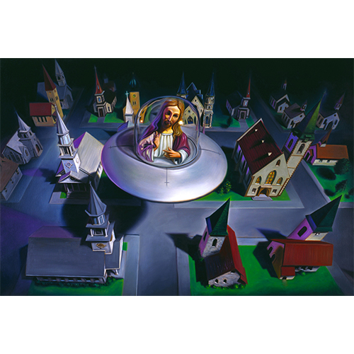
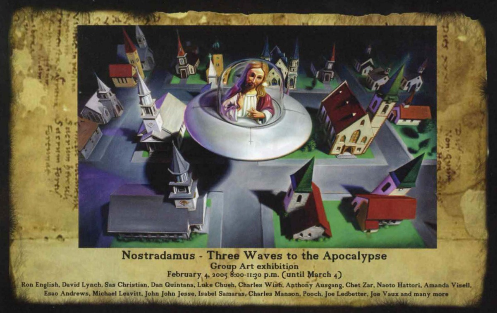

Exhibitions
Nostradamus: Three Waves to the Apocalypse, Copro/Nason Gallery, Bergamot Station, Santa Monica, California, US, February 4–March 4, 2006.
Literature
Ron English, Abject Expressionism: The Art of Ron English (San Francisco: Last Gasp, 2007), p. 138. ISBN 978-0867196894.
Ron English, Fauxlosophy: The Art of Ron English (San Francisco: Last Gasp, 2016), p. 142. ISBN 978-0867196566.
Ron English, Death and the Eternal Forever (Korero Press, 2014), back cover. ISBN 978-0957664920.
Ron English, Original Grin: The Art of Ron English (Paris: Cernunnos, 2019), p. 245. ISBN 978-2374950938.
Notes
This work is reproduced on the advertisement for Nostradamus: Three Waves to the Apocalypse in Juxtapoz, issue 61, February 2006.
Ancillary Documentation
The following material documents the work’s reproduction in promotional material for Nostradamus: Three Waves to the Apocalypse.
